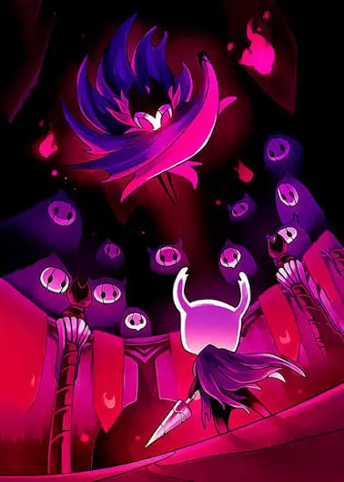
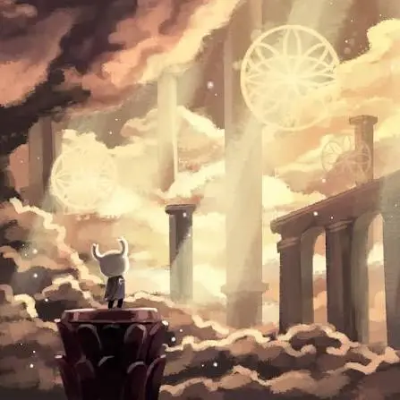
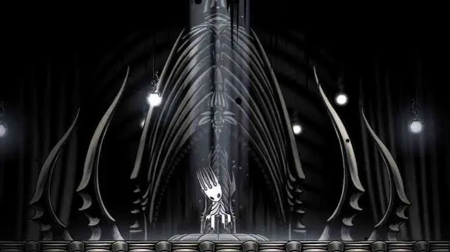

Hallownest fue un antiguo reino subterráneo habitado por insectos, construido bajo el liderazgo del Rey Pálido. Sus ciudades, estaciones y templos reflejan una civilización que alguna vez prosperó, pero que terminó cayendo en la ruina.
A medida que el jugador explora sus cavernas, descubre los restos de aquella civilización y las historias de quienes vivieron allí. Cada rincón esconde secretos que ayudan a reconstruir el pasado del reino.

Durante el viaje por Hallownest, el Caballero encuentra personajes que tienen sus propias historias, objetivos y secretos.

Cada región de Hallownest tiene una identidad propia. Algunas zonas están llenas de vegetación y vida, mientras que otras presentan ruinas, cavernas oscuras o enormes construcciones abandonadas.
La exploración es una de las partes principales de Hollow Knight. Los caminos no siempre son evidentes y muchas áreas esconden secretos que solamente pueden descubrirse regresando después de conseguir nuevas habilidades.
La música, los colores y los detalles del escenario ayudan a transmitir la sensación de estar recorriendo los restos de una civilización que alguna vez estuvo viva.
